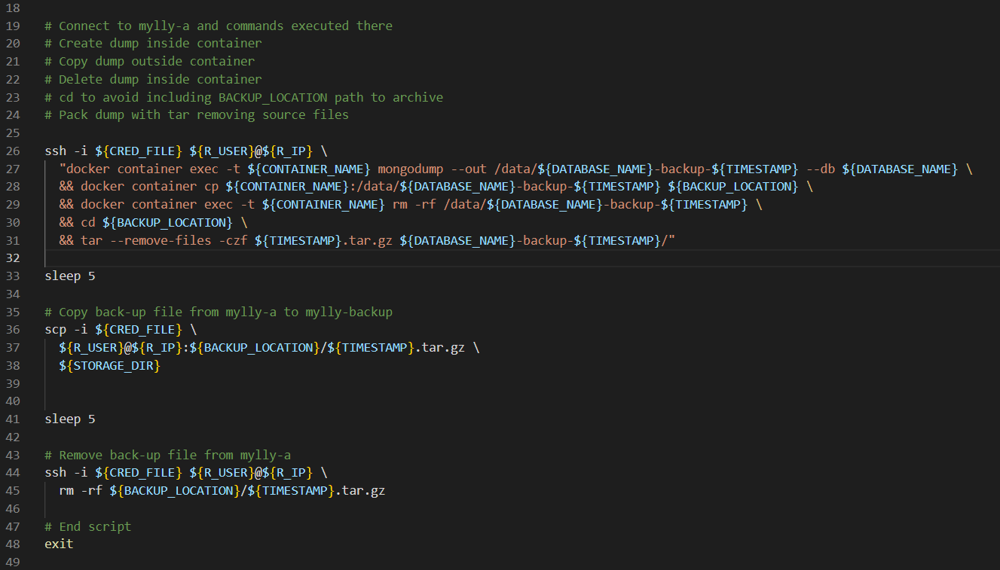

Samu Koponen - Portfolio
Projektityöskentely (IT)
Keskustelufoorumin kehitys
Tämän projektin keskeinen tehtävänanto oli kehittää internettiin julkaistavaa keskustelufoorumia, josta oli jo valmiiksi joten kuten toimiva pohjaratkaisu. Ryhmään kuului kuusi jäsentä ja aikaa projektille oli noin kolme kuukautta. Osa ryhmästä keskittyi testaamiseen, osa sovelluskehitykseen ja projektijohtaja projektin hallintaan. Omaan osaani kuului tuotanto- ja testausympäristön hallinta pilvessä olevan palvelimen virtuaalikoneilla lokijärjestelmineen sekä vähän myös sovelluskehitystä. Näistä muutama kuva alla.
Minulle tämän projektin tekeminen osoitti, että ohjelmistoprojektit ovat mielenkiintoisia, haastavia ja palkitsevia. Pidin erityisesti projektin toimeksiannosta, jonka mukaan projektiryhmämme toimisi kuten yritys, joka aloittaa keskustelufoorumin jatkokehityksen asiakkaan toiveiden mukaan. Siten projektiin oli suhteellisen helppoa suhtautua kuin kyseessä olisi oikea yritys tekemässä oikeaa laskutettavaa projektia. Kokemukseen kuului tuntea yrityksen vapaus tehdä asiat parhaaksi katsomallamme tavalla unohtamatta vastuuta asiakkaalle luvatusta tarjouksesta. Vapaus ilmeni tässä tapauksessa mahdollisuutena valita aihe, johon seventyä enemmän, kun asiakkaan toiveisiin oli vastattu. Nämäkin asiat huomioiden ehdin saada todentuntuisen kokemuksen siitä, millaista voisi olla työskentely sovelluskehittäjänä pienessä tiimissä tai yrityksessä.
Projekti kesti noin kolme kuukautta ja toteutettiin samaan tapaan kuin moni ohjelmointiprojekti, eli projektina GitLab:ssa. Käytössä oli projektinhalintaan tarkoitettuja työkaluja, lähdekoodin versiohallinta ja testausympäristöön ulottuva CI/CD-ketju.
Lisää projektista:
- Projektin avoin dokumentaatio
- Lähtötilanne
- Testaa tuotosta (keskustelufoorumi)
- Henkilökohtainen loppuraporttini (tulossa html-muotoiseksi liitteeksi)


| Palvelimen kuvaus | Näyte varmuuskopioinnista |
|---|---|

|
 |
Saksa-suomi-sanakirja - Oma projekti
Tämä sanakirjaohjelma toimii tekstipohjaisella käyttöliittymällä komentoriviltä. Sen käyttäjä aloittaa sanakirjan kirjoittamisen tyhjästä ja on kokonaan itse vastuussa sen sisällön oikeellisuudesta. Sanakirja onkin tarkoitettu oman sanaston kehittämistä varten. Tätä tukee mahdollisuus tehdä sanakokeita!
Oheisia kuvia klikkaamalla kuvat näkyvät suurempina. Valikoissa "E" tarkoittaa toimintoa, jota ei ole vielä ohjelmoitu.
| Ohjelman käynnistys | Sanakokeen teko | Sanojen tulostusta | Sanan lisäys |
|---|---|---|---|
|
|
|